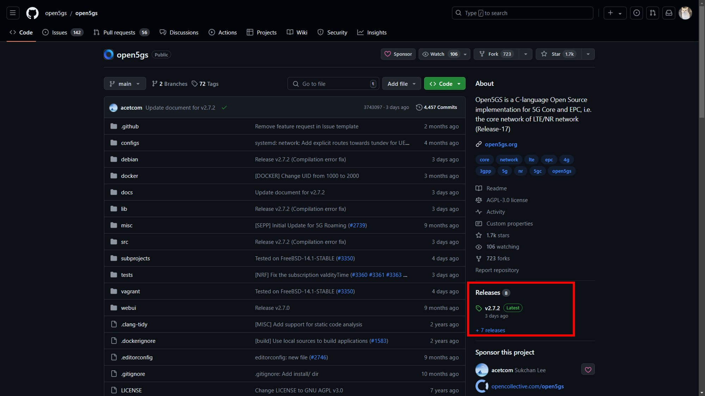
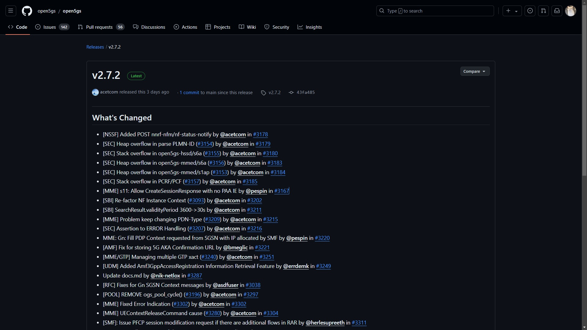

GitLab - Version control
Version control
別再用日期控管你的程式碼
開門見山的血淋淋範例:
檔案:
video_stream_20240726.py
video_stream_20240807.py
face_recognition_v2.py
face_recognition_v2_1.py
socket_server_20240503_v2.py
ml_game_0803.py
{擋案名稱} _ {日期} _ {版號}.副檔名*
專案目錄:
Andy_20210807_v1
Andy_20210807_v2
WebSocket_20240723_v1_test
HumanFlowRecognition_v1_test
HumanFlowRecognition_v1_svm
HumanFlowRecognition_v2_20240807
MeterRecognition_舊版
{專案名稱} _ {日期/版號}*
以上這些案例，相信大家在接觸Coding一路上多多少少可能都會遇到過，但這樣的控管方式，先撇除這個程式或專案是否會是多人開發好了，過了三個月，你還會記得當初存的socket_server_20240503_v2.py這個檔案到底在幹嘛嗎? v2跟v1差異在哪? 跟你目前手邊最新版差異在哪? 做了什麼更動?
也許經歷了幾次的波折，你學會了撰寫README跟註解，寫了攏長的文字來說明你的v2差異在哪，花費了好多心思來寫版本差異，這是個方法，但不是個好方法。
Hint
運用Git來實現版本控制， 軟體開發中的「版本」，泛指整個軟體研發週期中，某個時間點的狀態。
版本控管應具備
紀錄一個或一組檔案在時間內的變更歷史
藉由歷史紀錄，達到復原變更、追蹤變更、比對差異
可助於多人協作時的溝通，無論開發中、測試抑或上線，可藉由版號來清楚明確的表達你的問題
控管規則1. 版號標籤
很多時候我們會看到這個專案的版本為 version 1.5.3，其結構規則如下:
version{Major}.{Minor}.{Patch}
- Major: 大版本號，通常在於定義大更新，更新大版本號通常用於對系統做了重大變更，。
ex: v1.x.x -> v2.0.0，有可能v1跟v2在系統中某些部份已經不相容，大版本耕的根本，可能會影響使用者。
- Minor: 小版本號，通常用於做小規模更新，如: 功能增減、調整與變動。
ex: 新增了一支API。
- Patch: 向下相容修正，通常用於更新bug。
ex: 從v1.0.0 修補了一些bug，此時就可以release出一個v1.0.1。
控管規則2. 版本發佈訊息
上一個小節已經說明關於版本號的定義了，那今天我的Git flow中有好多Commit了，我修改了好多bug跟新增了幾個功能，我也發佈新版本了，但大家還是一直問我: 這個版本跟上個版本差異在哪? 我好頭痛啊!
Hint
運用撰寫releases資訊，簡單又不失細節的描述整個版本的來龍去脈。
先看一個Open source的案例: Open5GS
在Github中有一個release page，通常會在此會紀錄每次release的版本更新資訊。
若每次Release都以條列的方式撰寫版本更新項目，無論是自己、協作夥伴、測試人員，或是任何使用你的專案/產品的使用者，都可以更輕易的知道他們所使用的版本與先前版本差異性，依此也可解決每次討論版本時候的囧境。
開始實作吧 !
由於我們的GitLab上並沒有release page，但我們可以運用WiKi來紀載
進入專案Git WiKi page
創建WiKi
新增一個: 版本更新page
撰寫更新項目、Commit message並建立
完成
未來更新新版本
進入WiKi page
點選編輯
新增你release出來的新版本並save
完成
就這麼簡單，你一定也做得到 !